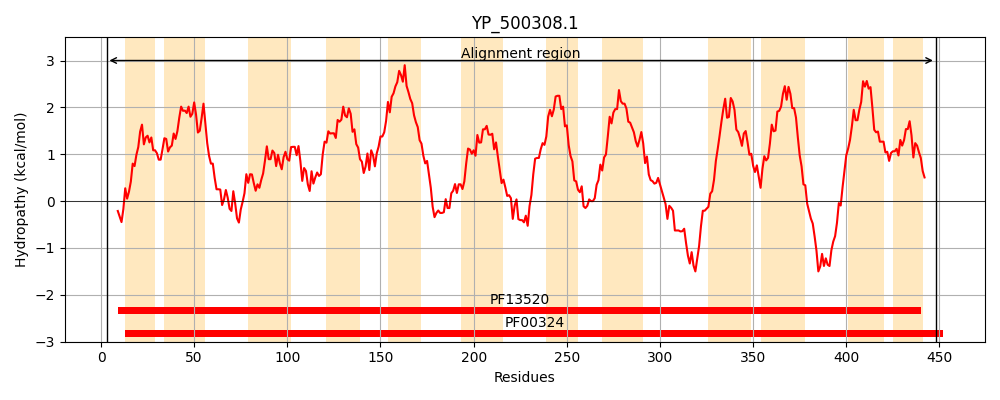
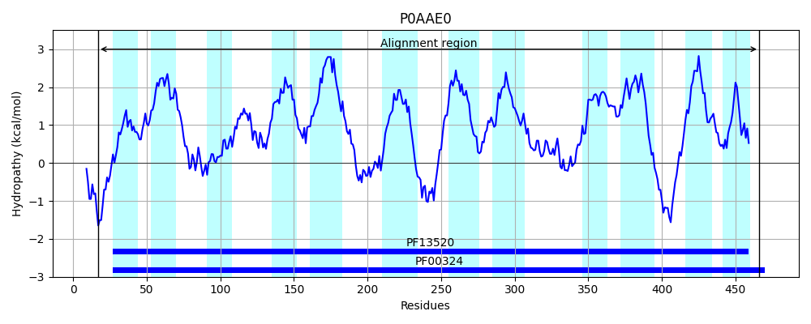
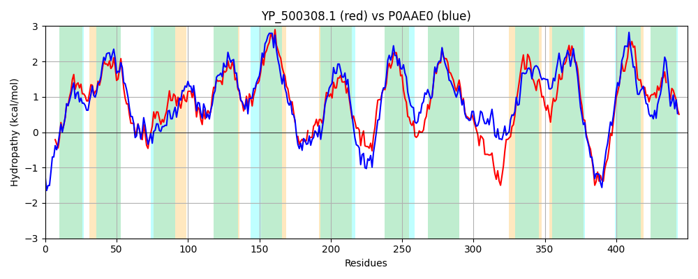

Hit Accession: P0AAE0
Hit TCID: 2.A.3.1.7
Hit Description: gnl|BL_ORD_ID|8658 gnl|TC-DB|P0AAE0|2.A.3.1.7 D-serine/D-alanine/glycine transporter - Escherichia coli.
Mach Len: 450
e:0.000000
Query TMS Count : 12
Hit TMS Count: 12
TMS-Overlap Score: 10.800000
Predicted Substrates:CHEBI:5584;hydron, CHEBI:4087;D-alanine, CHEBI:4245;D-serine, CHEBI:5460;glycine, CHEBI:9116;serine, CHEBI:40009;D-cycloserine
BLAST Alignment:
Score: 1281 , Bit scores: 498 bits, E-value: 7.1e-175, Alignment length: 450, Percentage identity: 52
Query: 3 EKLQRELSNRHIQLIAIGGAIGTGLFLGAGQTIALTGPSILLTYIIIGFMLFMFMRGLGEIIIQNTEFKSFADVTNTYIGPFAGFVTGWTYWFCWIITGMAEVTAVAKYVSFWFPEIPNWISALFCVLLLMSFNLLSARLFGELEFWFSIIKIATIIGLIVVGFVMILFAFKTQFG-HASFTNLY-EHGIFAKGASGFFMSFQMALFSFVGIEMIGVTAGETKDPVKTIPKAINSVPIRILIFYVGALAVIMSIIPWQQVDPDNSPFVKLFALIGIPFAAGLINFVVLTAAASSCNSGIFSNSRMLFGLSSQQQAPPNFSKTNKYGVPHVAIFASSALLLVAALLNYIFPDATKVFTYVTTISTVLFLVVWGLIIIAYINYSRKNPDLHKNATYKLLGGKYMGYLIFVFFIFVFGLLFINVDTRRAIYFIPIWFIL--LAFMYLRYKRIA 448
+ L+R L+NRHIQLIAIGGAIGTGLF+G+G+TI+L GPSI+ Y+IIGFMLF MR +GE+++ N E+KSF+D + +GP+AG+ TGWTYWFCW++TGMA+V A+ Y FWFP++ +W+++L ++LL++ NL + ++FGE+EFWF++IKI I+ LIVVG VM+ F++ G ASF +L+ + G F KG SGFF FQ+A+F+FVGIE++G TA ETKDP K++P+AINS+PIRI++FYV AL VIMS+ PW V P+ SPFV+LF L+G+P AA +INFVVLT+AASS NSG+FS SRMLFGL+ + AP F+K +K VP + S LL ++ Y+ P FT +TT+S +LF+ VW +I+ +Y+ Y ++ P LH+ + YK+ GK M ++ FF+FV LL + DTR+A+ P+WFI L ++++ KR A
Sbjct: 17 QSLRRNLTNRHIQLIAIGGAIGTGLFMGSGKTISLAGPSIIFVYMIIGFMLFFVMRAMGELLLSNLEYKSFSDFASDLLGPWAGYFTGWTYWFCWVVTGMADVVAITAYAQFWFPDLSDWVASLAVIVLLLTLNLATVKMFGEMEFWFAMIKIVAIVSLIVVGLVMVAMHFQSPTGVEASFAHLWNDGGWFPKGLSGFFAGFQIAVFAFVGIELVGTTAAETKDPEKSLPRAINSIPIRIIMFYVFALIVIMSVTPWSSVVPEKSPFVELFVLVGLPAAASVINFVVLTSAASSANSGVFSTSRMLFGLAQEGVAPKAFAKLSKRAVPAKGLTFSCICLLGGVVMLYVNPSVIGAFTMITTVSAILFMFVWTIILCSYLVYRKQRPHLHEKSIYKMPLGKLMCWVCMAFFVFVVVLLTLEDDTRQALLVTPLWFIALGLGWLFIGKKRAA 466 | Protein Hydropathy Plots: |
|---|
|  |  |
Pairwise Alignment-Hydropathy Plot:
|
|---|
|  |